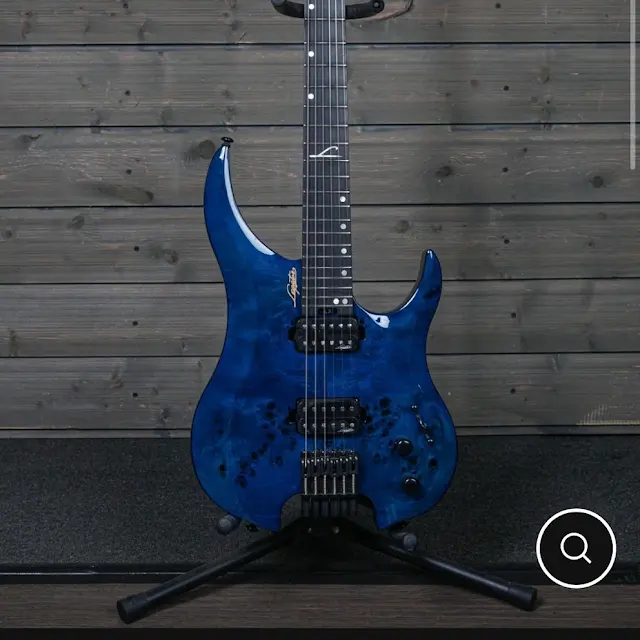

Legator Guitars
About
I bought it because it was half price, I could not resist. I have wanted to try a legator for awhile. I thought maybe I could drop tune this one. I named it Charles after Charles Caswell from Berried Alive
Marketing
Built for speed, precision, and modern high-performance playing, the Legator G6SS Ghost 6 Super Shred takes the company’s compact headless Ghost design and turns it into a purpose-built shred machine. Its lightweight, ergonomic construction provides excellent balance and portability while a 25.5” scale keeps the familiar tension and response of a traditional six-string guitar.
A mahogany body provides a solid, resonant foundation, topped with striking poplar burl for a distinctly modern appearance. The bolt-on three-piece maple neck is shaped for fast playing and finished in smooth satin, while the rounded neck heel provides easy access to all 24 frets. An extremely flat 18” radius ebony fingerboard and medium-jumbo stainless steel frets make quick runs, wide bends, and technical playing feel natural and effortless.
Two Legator Aftershock passive ceramic humbuckers provide the G6SS with a powerful, articulate voice designed to stay clear under high gain. A five-way blade selector expands the tonal range beyond the basic two-humbucker configuration, with split-coil sounds available in positions 2 and 4. From tight rhythm work and complex riffs to fluid leads and aggressive modern metal tones, the G6SS is designed to remain defined and responsive.
Legator’s headless fixed bridge and locking headpiece eliminate the traditional headstock while providing dependable tuning stability and helping keep the instrument compact and well balanced. Combined with its sculpted body contours, thin neck profile, ebony fingerboard, stainless steel frets, and premium-looking burl top, the Ghost Super Shred delivers a boutique-inspired feature set in an instrument designed to be played fast and hard.
Headless Ghost Design
The Ghost’s headless construction reduces unnecessary weight at the end of the neck, resulting in a compact guitar with excellent balance whether played sitting or standing. The ergonomic body contours further improve comfort during long playing sessions, while the headless format makes the G6SS especially portable without sacrificing a full 25.5” scale length.
Mahogany Body with Poplar Burl Top
A mahogany body gives the G6SS a resonant foundation with strong mids and plenty of body, while the figured poplar burl top gives each instrument an aggressive modern appearance. A high-gloss finish highlights the natural burl figuring and contrasts with the guitar’s black hardware.
Fast Three-Piece Maple Neck
The bolt-on neck is constructed from three pieces of maple for strength and stability and features a smooth satin finish designed to minimize drag under the fretting hand. Its thin, performance-oriented profile and rounded heel make moving quickly around the neck and reaching the upper register particularly comfortable.
Ebony Fingerboard and Stainless Steel Frets
An ebony fingerboard with a very flat 18” radius provides a smooth surface suited to fast technical playing. Twenty-four medium-jumbo stainless steel frets offer excellent durability along with a slick feel for bends, vibrato, and rapid lead work. Mother-of-pearl diamond position markers complete the modern aesthetic.
Legator Aftershock Ceramic Humbuckers
A pair of Legator Aftershock passive ceramic humbuckers supplies the G6SS with the high output and clarity expected from a modern shred guitar. The pickups are voiced to retain definition through complex chords, low-register riffs, and high-gain amplification while still providing the attack needed for articulate lead playing.
The five-way blade selector adds extra versatility to the HH configuration, with coil-split combinations in positions 2 and 4 providing brighter, thinner sounds alongside the full humbucker voices.
Legator Headless Hardware
The G6SS uses Legator’s fixed headless bridge and locking headpiece system for stable tuning and straightforward string changes. Moving the tuning hardware to the bridge contributes to the Ghost’s compact dimensions and balanced feel while eliminating the weight of a conventional headstock.
Features
- Six-string headless electric guitar
- Legator Ghost ergonomic body design
- Super Shred Series
- Full 25.5” scale length
- Mahogany body
- Poplar burl veneer top
- High-gloss body finish
- Bolt-on neck construction
- Rounded neck heel for improved upper-fret access
- Three-piece maple neck
- Thin, performance-oriented neck profile
- Satin neck finish
- Ebony fingerboard
- Flat 18” fingerboard radius
- 24 medium-jumbo stainless steel frets
- Mother-of-pearl diamond inlays
- Dual Legator Aftershock passive ceramic humbuckers
- Approximately 13.5kΩ neck pickup
- Approximately 19kΩ bridge pickup
- Five-way blade pickup selector
- Coil-split sounds in selector positions 2 and 4
- Master volume control
- Master tone control
- Legator headless fixed bridge
- Legator locking headpiece/tuner system
- Graph Tech nut
- Black hardware
- Lightweight, balanced headless construction
- Designed for fast, technical and high-gain playing
- Made in Indonesia